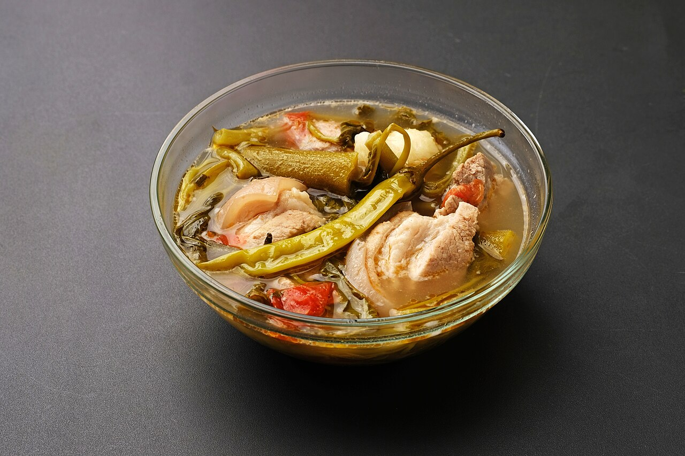

Sinigang

Description
Sinigang is a Filipino soup or stew characterized by its sour and savory taste. It is most often associated with tamarind (Filipino: sampalok), although it can use other sour fruits and leaves as the souring agent. It is one of the more popular dishes in Filipino cuisine.
Ingredients
- 2 pounds pork spare ribs, cut into 2-inch pieces
- 8 cups water
- 2 large tomatoes, quartered
- 1 medium onion, peeled and quartered
- 2 tablespoons fish sauce
- 6 pieces gabi, (peeled and halved depending on size)
- 1 6-inch radish (labanos), peeled and sliced to 1/2-inch thick half-rounds
- 2 finger chilies (siling haba)
- 1/2 bunch long beans (sitaw), ends trimmed and cut into 3-inch lengths
- 1 eggplant, ends trimmed and sliced to 1.2-inch thick half-rounds
- 6 pieces okra, ends trimmed
- 15 pieces large tamarind or 1 1/2 (1.41 ounces each) packages tamarind base powder
- salt and pepper to taste
- 1 bunch bok choy or pechay, ends trimmed and separated into leaves
Steps
- Rinse pork ribs and drain well.
- In a pot over medium heat, combine pork and enough water to cover. Bring to a boil, skimming scum that accumulates on top.
- Once broth clears, add tomatoes, onion, and fish sauce. Lower heat and simmer for about 1 to 1/2 hours or unit meat is tender, adding more water as necessary to maintain about 8 cups.
- Add gabi and cook for about 4 to 6 minutes or until tender.
- Add chili peppers and radish. Continue to simmer for about 2 to 3 minutes.
- Add long beans. Continue to cook for about 2 minutes.
- Add eggplant and okra and cook for another 1 to 2 minutes.
- If using packaged tamarind base, add to the pot and stir until completely dissolved.
- Season with salt and pepper to taste
- Add bok choy and continue to cook for about 1 minute. Serve hot.
Nutrition Information
- Calories: 747kcal
- Carbohydrates: 26g
- Protein: 41g
Fat: 54g
- Saturated Fat: 17g
- Polyunsaturated Fat: 9g
- Monounsaturated Fat: 19g
- Trans Fat: 1g
- Cholesterol: 181mg
- Sodium: 1077mg
- Potassium: 1813mg
- Fiber: 9g
- Sugar: 16g
- Vitamin A: 9953IU
- Vitamin C: 129mg
- Calcium: 326mg
- Iron: 5mg
Source: kawalingpinoy.com